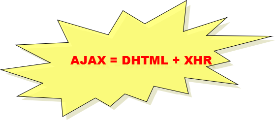
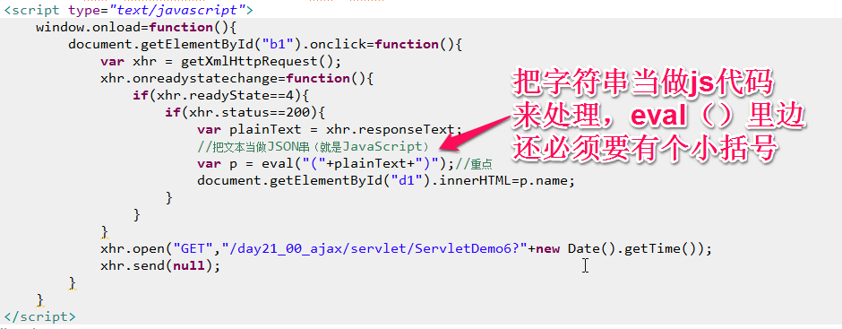

一、AJAX简介


AJAX ：Asynchronous JavaScript And XML,是一种用于创建更好更快以及交互性更强的 Web 应用程序的技术，是基于JavaScript、XML、HTML、CSS新用法.

二、同步异步：
同步：提交请求->等待服务器处理->处理完毕返回 这个期间客户端浏览器不能干任何事
异步: 请求通过事件触发->服务器处理（这是浏览器仍然可以作其他事情）->处理完毕
异步: 请求通过事件触发->服务器处理（这是浏览器仍然可以作其他事情）->处理完毕
三、AJAX编码步骤
1、创建XmlHttpRequest对象
2、注册状态监控回调函数
3、建立与服务器的异步连接
4、发出异步请求
2、注册状态监控回调函数
3、建立与服务器的异步连接
4、发出异步请求
<script type= "text/javascript">
//点击b1时发出异步请求SerlvetDemo1，看看执行的结果
window.onload= function(){
document.getElementById( "b1").onclick=function(){
//1、创建XmlHttpRequest对象（AJAX引擎）
var xhr = getXmlHttpRequest();
//2、注册状态事件监听器（回馈结果）
xhr.onreadystatechange= function(){//异步请求结束后的回调函数
if (xhr.readyState==4){//异步请求执行完毕，拿到了结果
if (xhr.status==200){//服务器段执行成功
//alert(xhr.getAllResponseHeaders());
//alert(xhr.getResponseHeader('Server'));
alert( "服务器已经执行完毕，去控制台看看吧" );
}
//alert(xhr.status+":"+xhr.statusText);
}
}
//3、建立与服务器的链接//time=" + new Date().getTime())不让缓冲影响结果
xhr.open( "GET","/day21_00_ajax/servlet/ServletDemo1?time=" +new Date().getTime());
//4、发出异步请求数据（POST）
xhr.send( null);//get方式没有请求正文
}
}
</script>
function getXmlHttpRequest(){
var xmlHttp ;
try {
// Firefox , Opera 8.0+, Safari
xmlHttp = new XMLHttpRequest();
}
catch (e) {
// Internet Explorer
try {
xmlHttp = new ActiveXObject("Msxml2.XMLHTTP" );
}
catch (e) {
try {
xmlHttp = new ActiveXObject("Microsoft.XMLHTTP" );
}
catch (e) {
alert( "您的浏览器不支持AJAX！" );
}
}
}
return xmlHttp;
}
String.prototype.trim = function(){
return this.replace(/(^\s*)(\s*$)/g , "" );
}
四、XMLHttpRequest详解
1、XmlHttpRequest对象：
不同浏览器是不同的。
属性：
status：只读的。代表着服务器端返回的响应码（200）
statusText：只读的。代表着服务器端返回的响应码描述。
readyState：只读的。代表着当前AJAX引擎处于的状态
0:代表XmlHttpRequest对象刚刚创建。
1：open已经调用（建立与服务器的链接），但是send（）还没有调用，还没有发出请求。
2：send方法已经被调用。请求对象已经给了服务器端，但是还没有响应。
3：能够取到响应消息头，但是取不到相应的正文
4：响应结束，可以取到所有响应的内容。
responseText：只读的。代表着服务器端返回的文本。
responseXML：只读的。代表着服务器端返回的是XML的文档（Document）。
方法：
abort()：终止异步请求。
getAllResponseHeaders()：得到所有的响应消息头和值。就是一个字符串。
getResponseHeader(headerName)：得到指定的响应消息头的值。返回一个字符串
open(String method,String url, boolean async):建立与服务器端的链接。async默认是true，异步请求。如果为false，就是同步请求。
send(“k1=v1&k2=v2”)：向服务器端发送请求正文。get请求，传递null即可。
setRequestHeader(headerName,headerValue):向服务器端传递请求消息头。
事件：
onreadystatechange：对应一个函数。回调函数。每一次的readyState的值发生变化，都会调用它指定的函数。
不同浏览器是不同的。
属性：
status：只读的。代表着服务器端返回的响应码（200）
statusText：只读的。代表着服务器端返回的响应码描述。
readyState：只读的。代表着当前AJAX引擎处于的状态
0:代表XmlHttpRequest对象刚刚创建。
1：open已经调用（建立与服务器的链接），但是send（）还没有调用，还没有发出请求。
2：send方法已经被调用。请求对象已经给了服务器端，但是还没有响应。
3：能够取到响应消息头，但是取不到相应的正文
4：响应结束，可以取到所有响应的内容。
responseText：只读的。代表着服务器端返回的文本。
responseXML：只读的。代表着服务器端返回的是XML的文档（Document）。
方法：
abort()：终止异步请求。
getAllResponseHeaders()：得到所有的响应消息头和值。就是一个字符串。
getResponseHeader(headerName)：得到指定的响应消息头的值。返回一个字符串
open(String method,String url, boolean async):建立与服务器端的链接。async默认是true，异步请求。如果为false，就是同步请求。
send(“k1=v1&k2=v2”)：向服务器端发送请求正文。get请求，传递null即可。
setRequestHeader(headerName,headerValue):向服务器端传递请求消息头。
事件：
onreadystatechange：对应一个函数。回调函数。每一次的readyState的值发生变化，都会调用它指定的函数。
五、AJAX - Send a Request To a Server
xmlhttp.open("GET","ajax_info.txt",true);
xmlhttp.send();
| Method | Description |
|---|---|
| open(method,url,async) | Specifies the type of request, the URL, and if the request should be handled asynchronously or not. method: the type of request: GET or POST url: the location of the file on the server async: true (asynchronous) or false (synchronous) |
| send(string) | Sends the request off to the server. string: Only used for POST requests |
GET or POST?
GET is simpler and faster than POST, and can be used in most cases.
However, always use POST requests when:
- A cached file is not an option (update a file or database on the server)
- Sending a large amount of data to the server (POST has no size limitations)
- Sending user input (which can contain unknown characters), POST is more robust and secure than GET
六、AJAX - Server Response
、
七、AJAX - The onreadystatechange Event
Note: The onreadystatechange event is triggered five times (0-4), one time for each change in readyState.
<!DOCTYPE html>
<html>
<head>
<script>
var xmlhttp;
function loadXMLDoc(url,cfunc)
{
<html>
<head>
<script>
var xmlhttp;
function loadXMLDoc(url,cfunc)
{
if (window.XMLHttpRequest)
{// code for IE7+, Firefox, Chrome, Opera, Safarixmlhttp=new XMLHttpRequest();
}else
{// code for IE6, IE5xmlhttp=new ActiveXObject("Microsoft.XMLHTTP");
}xmlhttp.onreadystatechange=cfunc;xmlhttp.open("GET",url,true);xmlhttp.send();
}
function myFunction()
{
loadXMLDoc("ajax_info.txt",function()
{
function myFunction()
{
loadXMLDoc("ajax_info.txt",function()
{
if (xmlhttp.readyState==4 && xmlhttp.status==200){document.getElementById("myDiv").innerHTML=xmlhttp.responseText;}
});
}
</script>
</head>
<body>
<div id="myDiv"><h2>Let AJAX change this text</h2></div>
<button type="button" onclick="myFunction()">Change Content</button>
</body>
</html>
}
</script>
</head>
<body>
<div id="myDiv"><h2>Let AJAX change this text</h2></div>
<button type="button" onclick="myFunction()">Change Content</button>
</body>
</html>
